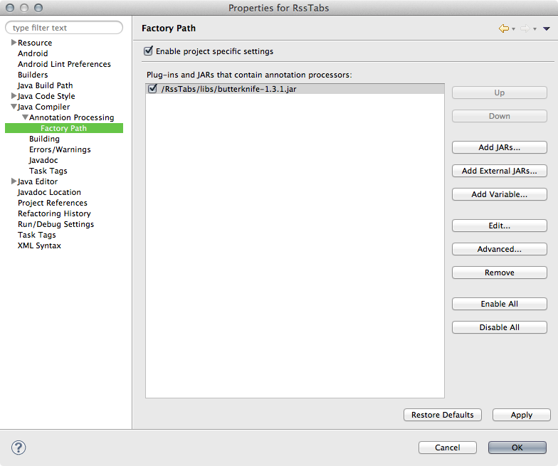

Eclipse Configuration
-
Right click on your project in the Package Explorer, go to Properties, head to Java Compiler → Annotation Processing and check "Enable project specific settings".
Ensure the other annotation processing settings are the same as shown below:

-
Expand the Annotation Processing section and select Factory Path. Check "Enable project specific settings" and then click "Add JARs…". Navigate to the project's
libs/folder and select the Butter Knife jar.
- Click "Ok" to save the new settings. Eclipse will ask you to rebuild your project to which you should click "Yes"
- Make sure that the
.apt_generated/folder is in your project root. It should contain files likeYOURACTIVITY$$ViewBinder.java. If these files are not present trigger a clean build by selected Project → Clean. This folder and files should not be checked into revision control. - Lastly, under "Java Compiler", make sure that the Compiler compliance level is set to Java version 1.6 at minimum.